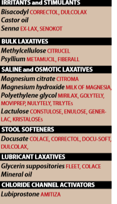
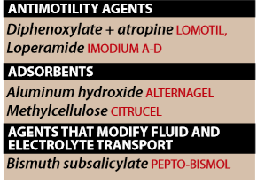

LAXaTIVES:
→ Laxatives are commonly used for intermittent or not constipation
- high-fiber diet
- adequate fluid intake
- regular exercise
- heeding of the natural call
A. Irritants and Stimulants
1.Senna
- widely used as as stimulant laxative
- api → a group of sennosides (natural complex of anthraquinone glycosides)
- Orall admin. → evacuation of the bowels within 8 to 10hrs
- water and electrolyte secretion into the bowel
- in combination with docusate-containing stool softener → treating opioid-induced constipation
2.Bisacodyl
- potent stimulant of colon
- Supp and Enteric-coated tablet admin.
- act directly on the nerve fibers in the muscosa of the colon
- abdominal cramps,atonic colon with prolonged use
- drugs that may increase the gastric PH,such as antacids,PPIs,H2-antagonist, should not be taken with enteric coated tablets → stomach irritation and pain
3.Castor oil
- broken down in the small intestine → ricinoleic acid → which irritating to the stomach → ↑ peristalsis
- pregnant patients should avoid it due to stimulation of uterine contractions.
B. Bulk laxatives
→ ingestible hyrdrophillic colloids that
- abosrob water → forming a bulky emollient gell that distend the colon → promotes peristalsis
→ Methylcellulose
→ Psyllium seeds
→ should be used with caution in patients who are immobile → potential intestinal obstruction.
C.Saline and Osmotic laxatives
→saline catharctics such as
→ Magnesium citrate
→ Magnesium hydroxide
→ Sodium phospahte
- non-absorbable salts ( anions and cations )
- hold water in the intestine by osmosis
- distends the bowel,↑ intestinal activity and producing defaction in a few hours
→ PEG [ Polyethylene glycol ]
- used as colonic lavage solutions to prepare gut for radiologic/endoscopic procedures
- prescription/otc poweder
→ Lactulose
- semisynthetic disaccharide sugar
- act as osmotic laxative
- cannot hydrolyzed by intestinal enzymes
- Oral doseages are degraded in the colon by colonic bacteria → lactic,formic and acetic acid
- ↑ osmotic pressure → fluid accumulation,colon distenstion,soft stools and defacation
D.Stool softeners (emollient laxatives or surfactants)
→ surface-active agents that become emulsified with the stool procedure softer feces and ease passage
→ Doscusate sodium-/potassium-/calcium
- may take days to become effective
- often used for prophylaxis rather than acute treatment
- should not be taken concominantly with mineral oil because of the potentnial for absorption of the mineral oils
E.Lubricans laxatives
→ Mineral Oils and Glycerine suppositories
- act by facilitating the passage of hard stools
- orally amdin. in an upright position to avoid aspiration and potential for lipid or lipoid pneumoniae
F.Chrolirde channel activator
→ Lubiprostone
- only agent in this class
- activating chloride channels to increase fluid secration in the intestinal lumen
- eases the passage of stools and causes little change in electrolyte balance
- treatment of chronic costipation [does not shown tolerance/dependace]
Antidiarrhelas

→ ↑ motility of the GIT and ↓ absorption of fluid [which are major factos in diarrhea]
→ used to treat
- acute diarrhea
- antimotility agents
- absorbents
- drugs that modify fluid and electrolyte transport
A.Antimotility agents:
→ Diphenoxylate and Loperamide
- both are analogues of meperidine [ and have opioid like actions in the gut]
- inhibit acetylcholine release and ↓ peristalsis
→ should not be used in children or patients with severe colitis [contribute toxic megacolon]
B.Absorbents
→ Aluminum hydroxide and Methylcellulose
- are used to control diarrhea
→ less effective than antimotility agents and they can interfere with the absorption of other drugs
C.Agents that modify fluid and electrolyte transport
→ Bismuth subsalicylate
- travelers diarrhea
- action may be due to salicylate component as well as its coating action
- ADR: include black tongue and black stools
{kind=link}
{kind=link}
{kind=link}